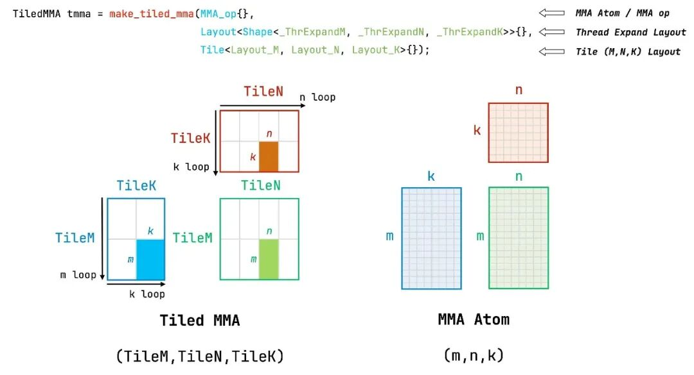

flowchart TD
subgraph ThreeTier["GEMM 三级 Tiling 层次"]
CTATile["1. CTA 级 Tiling: 分块置于共享内存 (如 128×128)"]
WarpTile["2. Warp 级 Tiling: 线程束分块置于寄存器 (如 64×32)"]
MMAAtom["3. MMA Atom 硬件原语: 底层 mma.sync 指令 (如 16×8×16)"]
CTATile --> WarpTile --> MMAAtom
end
第 5 课：MMA Atom、Tiled MMA 与三级 Tiling
参考答案版：包含完整代码实现与问答题深度参考解析。建议先独立完成练习题后再展开核对。
本课目标与完成标准
学完后你应能：从指令 atom 推导 warp/CTA tile，并检查 A/B/C fragment 分区的一致性。
通过必须同时满足：
- 独立补齐本课唯一的代码填空题，并通过给定检查；
- 三个问答题均说明因果链，而不是只报术语；
- 能指出至少一个正确性边界和一个性能取舍；
- 总分不低于 8/10，且没有一票否决级概念错误。
前置关系
- 课程前置：CUDA 线程模型、GEMM、C++ 模板基础
- 本课在路线中的作用：MMA Atom 封装一条硬件矩阵指令的操作数类型、shape 和线程映射；Tiled MMA 在 atom 上复制线程布局与 value layout。
核心心智模型
核心操作与执行流程图解

图 5-1：CUTLASS make_tiled_mma API 与硬件指令对应关系图解
图 5-2：从硬件 Atom 到 Thread Block 的三级分层 GEMM 构建流
1. 它是什么，解决什么问题
MMA Atom 与 Tiled MMA（三级分块计算流水线） 是 CUTLASS 3.x 驾驭现代 GPU Tensor Core 矩阵乘法核心指令的顶层代数抽象。
从硬件微指令到工程算子的鸿沟（结合图 5-1 与图 5-2）： - 微架构的物理现实：现代 Tensor Core 硬件指令（如 Ampere 的 mma.sync.aligned.m16n8k16，Hopper 的 wgmma.mma_async）操作的矩阵尺寸极其微小（如 \(16 \times 8 \times 16\)）。单条指令只能由一个 Warp（32 线程）协同执行，且每个线程持有的寄存器槽位排布必须严格与硬件芯片布线相契合； - 三级 Tiling 架构（图 5-2）：如何将任意巨大的全局矩阵乘法无缝映射到该微小指令上？CUTLASS 构建了严密的三级代数投影： 1. MMA Atom（指令级原子）：封装单条硬件 PTX 指令的数学形状、数据类型与 Warp 线程映射契约； 2. Warp Tile（线程束级分块）：在单个 Warp 内部沿 \(M, N\) 维度平铺复制多个 Atom，扩大单 Warp 的寄存器工作域； 3. CTA Tile / Tiled MMA（线程块级分块）：编排多个 Warp（如 \(2 \times 2\) 或 \(4 \times 1\)）组成 ThreadBlock，协同从 Shared Memory 消费数据并累加至私有寄存器； - 核心价值：通过 make_tiled_mma，开发者无需手工编写汇编级寄存器重排，CuTe 会自动推导出每个线程在 \(A\)、\(B\) 与累加器 \(C\) 上的强类型分片张量（Partitioned Fragment）。
2. 它如何工作（结合图 5-1 与图 5-2）
以 Ampere 架构标准半精度 FP16 为例，三级分块的具体构建与执行流程如下： 1. 定义底层 MMA Atom： - 硬件指令为 SM80_16x8x16_F32F16F16F32_TN：输入 \(A\) 为 \(16 \times 16\) 半精度（FP16），\(B\) 为 \(16 \times 8\) 半精度（FP16），输出累加器 \(C\) 为 \(16 \times 8\) 单精度（FP32）； - 该 Atom 内部严格固化了 32 个线程的线程—值映射关系（TV Layout）； 2. 平铺构成 Tiled MMA： - 通过 make_tiled_mma 声明 Warp 拓扑（如 make_layout(make_shape(Int<2>{}, Int<2>{}, Int<1>{}))）； - 4 个 Warp 组合成一个 CTA，负责计算 \((16 \times 2) \times (8 \times 2) = 32 \times 16\) 的子矩阵；若进一步在 Warp 内部平铺，可扩展为 \(128 \times 128 \times 32\) 的 CTA Tile； 3. 推导正交分区（partition_A, partition_B, partition_C）： - 算法调用 tiled_mma.get_slice(threadIdx.x) 提取当前线程在计算域中的句柄； - 调用 partition_A、partition_B 与 partition_C，将片上共享内存和私有寄存器切割为严格对齐硬件输入端口的私有 Fragment； 4. 主循环中的矩阵乘点积发射： - 在收缩维度 \(K\) 的推进中，线程执行 cute::gemm(tiled_mma, rC, rA, rB, rC)； - 硬件直接连续发射底层 mma.sync 汇编指令，Tensor Core 矩阵乘阵列以全流水线吞吐进行乘加运算，中间累加状态恒定常驻在 rC 寄存器中。
3. 正确性条件与常见误区
- Fragment 的“形同质异”致命陷阱（TV Layout 不兼容）：
- 致命误区：以为“只要两个 Fragment 的 Shape 相同，寄存器就可以随意传给任何算子”；
- 硬件铁律：Tensor Core 对矩阵 \(A\)（行输入）和矩阵 \(B\)（列输入）的线程—寄存器排布契约（Thread-Value Layout）有着截然不同的硬件布线要求！
- 即使 Fragment A 与 Fragment B 在逻辑上都是
(4, 1)个元素，二者的 TV Layout 也是完全正交的。绝不能把由partition_A解算出的寄存器传给gemm的 \(B\) 操作数端口，否则会导致线程把错误的矩阵坐标当成输入，计算结果彻底沦为乱码；
- M/N/K 维度顺序与转置模式（TN / NN / TT）的严格绑定：
- MMA Atom 的名称中通常标明布局契约（例如
TN代表 \(A\) 为转置 Row-Major、\(B\) 为非转置 Column-Major）；传入的 Shared Memory 布局必须与之严格同构。
- MMA Atom 的名称中通常标明布局契约（例如
4. 性能与工程取舍（寄存器压力与分块调优）
- 长寿命累加器 \(C\) vs. 短寿命操作数 \(A/B\)：
- 累加器 Fragment
rC的寄存器数量直接正比于单线程计算的输出面积： \[\text{Regs}(C) \propto M_{\text{warp\_tile}} \times N_{\text{warp\_tile}}\] - 寄存器寿命特性：
rC必须在整个 \(K\) 维主循环的生命周期内全程常驻在物理寄存器中，绝不可释放； - 相反，操作数寄存器
rA和rB的大小虽然正比于 \(K_{\text{tile}}\)，但每轮 \(K\) 步进执行完后即可被下一轮数据直接覆写（或仅需双缓冲暂存）；
- 累加器 Fragment
- 寄存器溢出（Spill）时的裁决准则：
- 若编译期提示 Register Spill（溢出到高延迟 Local Memory），必须优先缩减 \(M_{\text{tile}}\) 或 \(N_{\text{tile}}\)，因为这能以平方级的幅度迅速削减全局常驻累加器寄存器；
- 缩减 \(K_{\text{tile}}\) 虽能轻微减少单轮操作数寄存器，但会急剧增加收缩维度的循环迭代轮次，削弱内存流水掩盖延迟的能力。
具体演示：SM80 16×8×16 Atom 的硬件微架构尺寸解析
Ampere 架构标准 Tensor Core 指令 mma.sync.aligned.m16n8k16.row.col.f32.f16.f16.f32： - 逻辑计算规模：\(M = 16, \ N = 8, \ K = 16\)； - 矩阵 \(A\) 包含 \(16 \times 16 = 256\) 个 FP16 元素（总计 512 字节）； - 矩阵 \(B\) 包含 \(16 \times 8 = 128\) 个 FP16 元素（总计 256 字节）； - 输出 \(C\) 包含 \(16 \times 8 = 128\) 个 FP32 元素（总计 512 字节）； - 乘加浮点运算量：\(2 \times 16 \times 8 \times 16 = 4096 \text{ FLOP}\)。 - 单个 Warp 内 32 线程的物理负载均摊： - 每个线程持有 \(A\) 的 \(256 / 32 = 8\) 个 FP16 元素（即 4 个 32-bit 寄存器）； - 每个线程持有 \(B\) 的 \(128 / 32 = 4\) 个 FP16 元素（即 2 个 32-bit 寄存器）； - 每个线程持有 \(C\) 的 \(128 / 32 = 4\) 个 FP32 元素（即 4 个 32-bit 寄存器）； - 微观因果：单条指令仅需各线程贡献极少量的寄存器，Tensor Core 硬件网格在数个周期内并行吞吐 4096 FLOP。Tiled MMA 正是通过在更高层级成倍复制该微架构单元，构筑起大模型每秒数百 TFLOPS 的算力基石。
实践任务：唯一代码填空题
补齐 SM80 FP16 MMA atom 的 K 维。
规则：只能修改 TODO/______ 所在位置；不要删除断言或放宽误差。代码注释说明了每个边界条件。
Code
%%writefile /tmp/mma_shape.cu
// 概念检查：硬件 atom 的逻辑 shape，而非完整 kernel。
constexpr int MMA_M = 16;
constexpr int MMA_N = 8;
constexpr int MMA_K = ______;
static_assert(MMA_M * MMA_N * MMA_K == 2048);检查方法
编译静态断言，并在纸上画出 instruction→warp→CTA 三层 shape；注意这不是吞吐 FLOPs 计算。
提交时请给出：补齐后的代码、实际运行输出（环境不可用时注明“仅静态审查”）以及对失败用例的解释。
Q1
不要背定义：请从输入、状态变化和输出三个阶段解释“MMA Atom、Tiled MMA 与三级 Tiling”的工作机制。
你的答案：
Q2
为什么两个 fragment 的 shape 相同仍不能直接互换？
你的答案：
Q3
给定寄存器溢出，优先缩 M/N tile 还是 K tile？你还需看哪些证据？
你的答案：
评分与通过规则
- 代码 4 分：正常输入 2 分，边界输入 1 分，解释实现 1 分；
- Q1～Q3 各 2 分；
- 一票否决：结果碰巧正确但核心因果链错误、删除边界检查、把未运行结果说成实测。
需要提示时按四级机制请求：概念区域 → 具体方向 → 关键局部 → 完整答案。